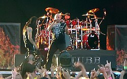
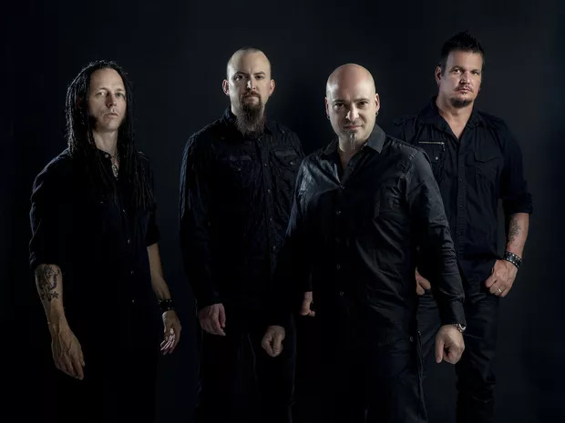

Disturbed é uma banda de metal de Chicago, Illinois, formada em 1994 , quando os músicos Dan Donegan, Steve "Fuzz" Kmak e Mike Wengren contrataram David Draiman como vocalista.
A banda já lançou oito álbuns de estúdio, tendo cinco deles estreado consecutivamente no primeiro lugar na Billboard 200.
A banda entrou em hiato em Outubro de 2011 e retornou com o lançamento do álbum Immortalized em 2015 .


32 anos de carreira